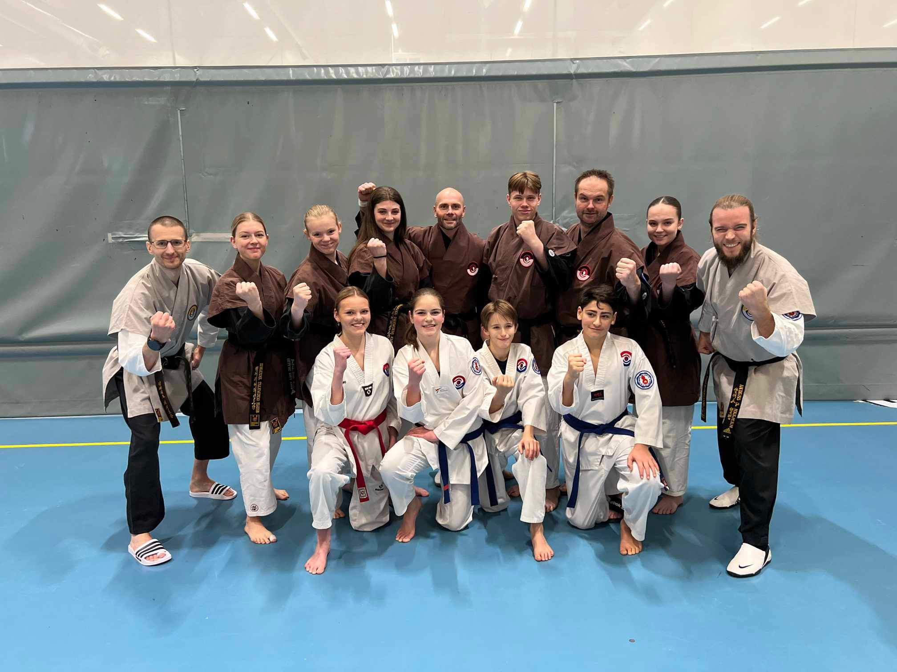
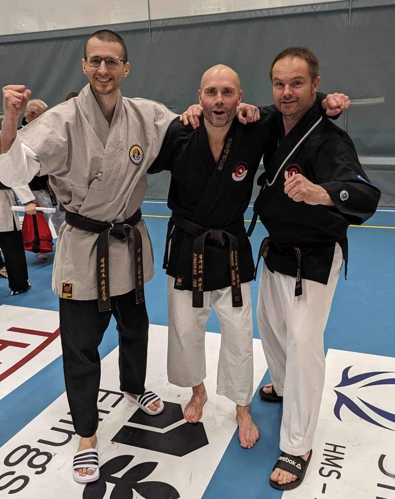
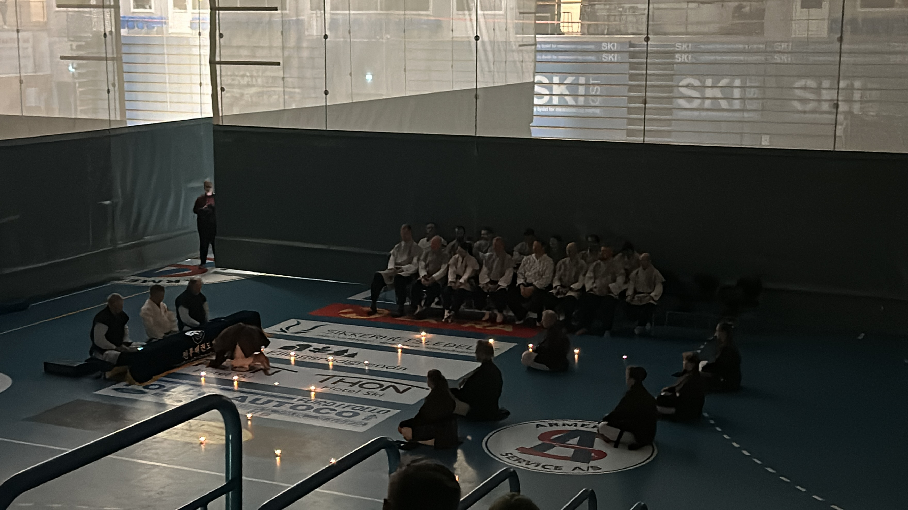
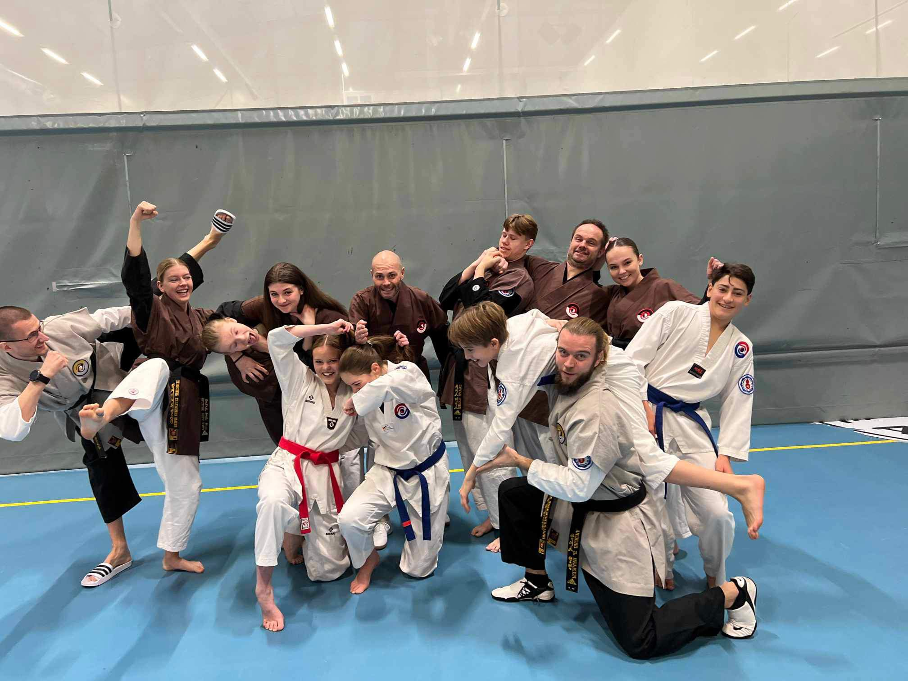

Innlegg
Vinterleir i ski bød på både gradering og trening

I helgen 1-3. desember 2023 arrangerte Ski Taekwondo Klubb sin årlige vinterleir. Det var duket for trening, oppvisning og gradering, ikke minst.
Graderingen skjedde fredag kveld, og fra vår klubb graderte vår flinke utøver Tor Brede Rognlid til 2. dan! Til tross for litt skader og en del år siden sist gradering var det god innsats på graderingen, og det var stas for alle fra klubben å se på og heie.Den som graderte var følgende:
- Tor Brede Rognlid - 2.Dan
Under graderingen var det visning av pensum, frikamp, knekking av planker og knusing av taksteinvideo
Gratulerer så mye til Tor-Brede!

På lørdag var det lagt opp til treninger kategorisert etter beltegrad. Det ble gjennomgått pensum, men også generell trening for litt moro også!
Lørdags kveld var det oppvisning, og her fremførte kyosanim Helene og Silje Poomse Taebaek.
Søndag formiddag var det en stemningsfull danseremoni, med dempet lys og tente telys.
Under seremonien fikk de nygraderte diplom av Grandmaster Cho sammen med andre Mastere, og det var etter denne seremonien Tor Brede offisielt var 2. dan.

Vi vil takke alle i TTU og Ski Taekwondo Klubb for nok en vellykket vinterleir, og ikke minst alle fra klubben som deltok på leiren. Det er alltid veldig hyggelig, og skaper et meget godt samhold i klubben. Neste gang vil vi ha med enda flere!
